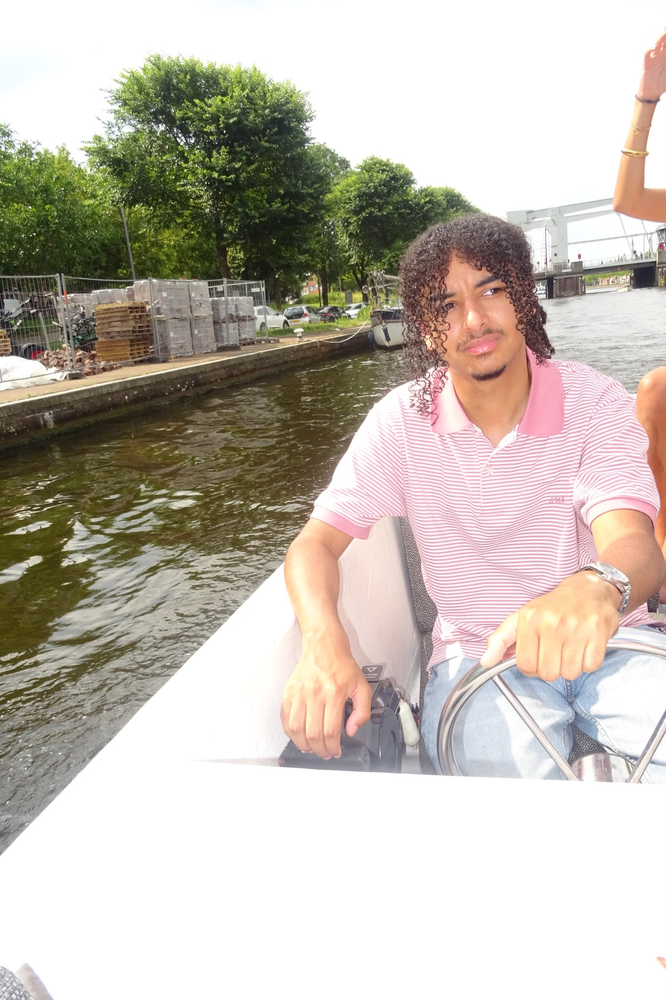

Over mij
Hoi, ik ben Brandon. Ik hou van creatief bezig zijn en van creatief denken.
Of het nu een poster in Illustrator is, een website in code of een nummer dat ik produceer in FL Studio: ik vind het mooi om iets vanaf nul op te bouwen. Ik zoek naar ideeën die net anders zijn en werk ze daarna strak en doordacht uit.
Buiten het scherm draait bij mij alles om muziek. Ik speel piano, gitaar en bas en produceer mijn eigen tracks. En als ik niet aan het maken ben, zit ik waarschijnlijk te gamen. Dat is meteen de reden dat ik ook in Unity ben gaan bouwen.

-
Muziek
Piano, gitaar en bas. Muziek is mijn manier om te ontspannen én te creëren.
- Piano
- Gitaar
- Bas
-
Producer
In FL Studio produceer ik mijn eigen muziek, van eerste melodie tot mix.
- FL Studio
- Mixing
-
Gamen
Games inspireren me in ontwerp, sfeer en interactie, en zetten me aan om zelf te bouwen.
- Unity
- Game design
-
Creatief denken
Ik denk graag in concepten: eerst het idee, dan de vorm.
- Concept
- Ideeën
Hobby’s
Waar ik mijn vrije tijd in steek.
-
01
Gamen
Gamen is voor mij ontspanning, maar ik let ook altijd op hoe een game in elkaar zit: de levels, de sfeer en hoe alles reageert op wat je doet.
-
02
Muziek spelen
Ik speel piano, gitaar en bas. Vaak speel ik nummers na die ik goed vind, of ik jam gewoon wat tot er iets moois ontstaat.
-
03
Muziek produceren
In FL Studio werk ik een idee uit tot een compleet nummer: drums, melodie, bas en daarna de mix.
Speel een paar noten
Klik op de toetsen of gebruik je toetsenbord A t/m K